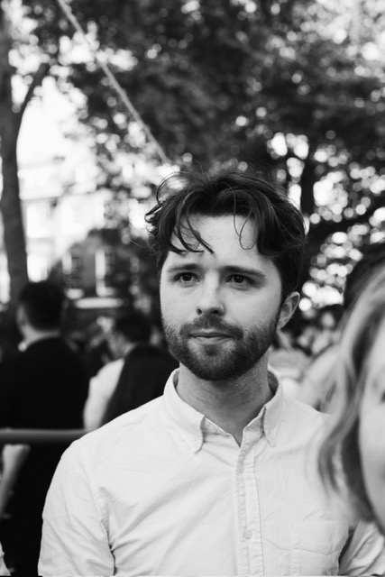

Alex Valentine Evdokimov

Alex Valentine Evdokimov is a London-based designer focused on cultural architecture and public infrastructure that prioritise user experience, materiality, and long-term adaptability.
Having recently graduated from the Architectural Association, he has gained experience at Spencer Fung Architects and currently works at Mossessian Architecture, alongside freelance cultural collaborations.
He co-founded Hysteresis, an independent practice focused on enabling collaboration between young artists and designers — developing architectural and strategic interventions to redirect cultural and economic flows back into overlooked regions.
Alex aspires to create thoughtful, tactile, and participatory environments that foster human connections. He is excited to explore phenomenology, materiality, and emotion in design.